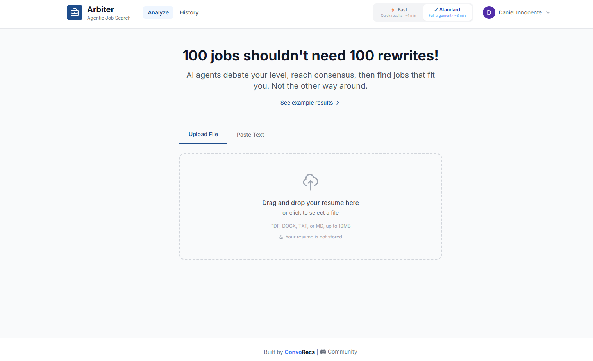
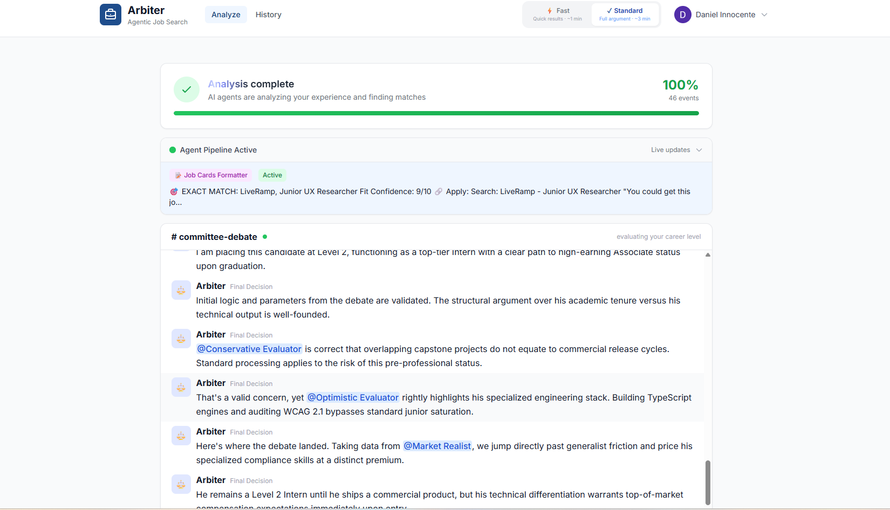
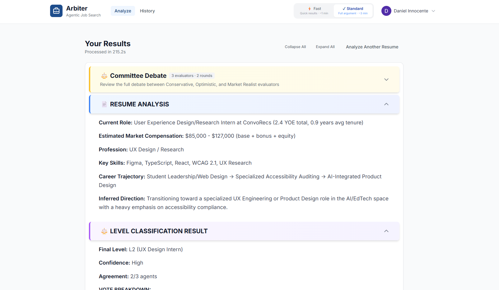
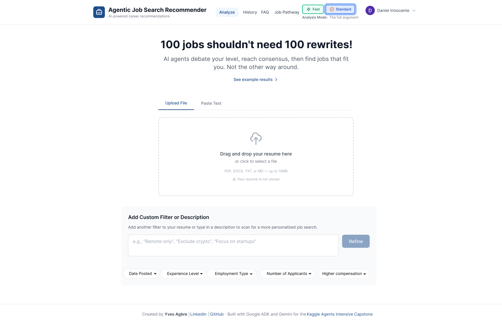
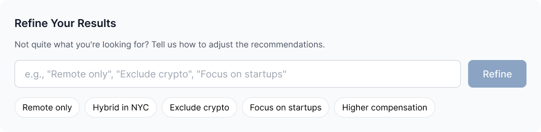
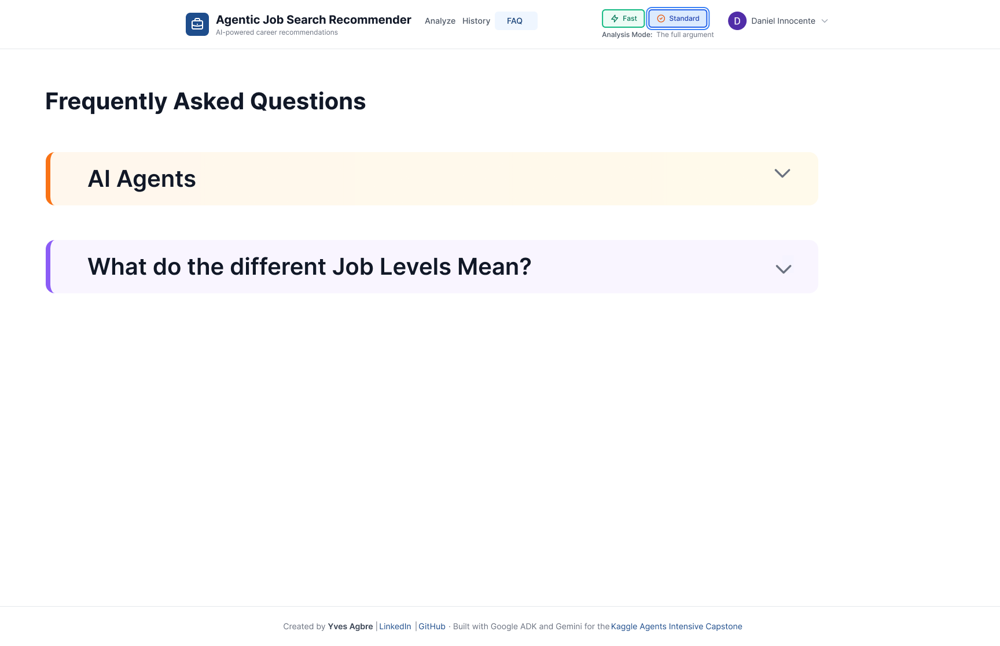
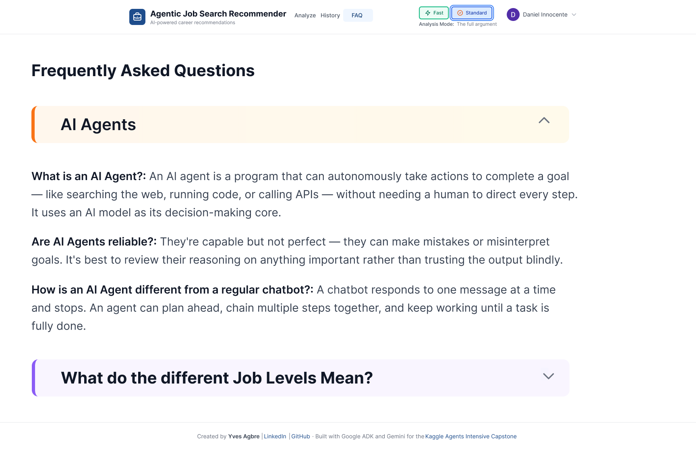
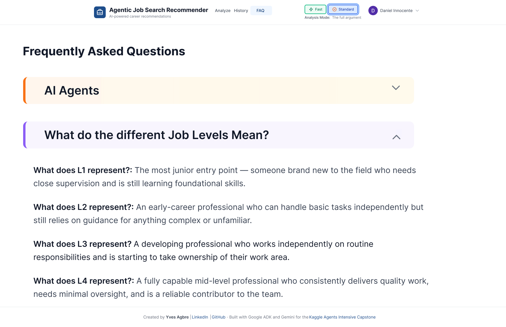

Overview
Arbiter helps users understand where they fit in the job market.
Arbiter is an AI powered job matching tool that analyzes a resume, identifies a user's likely career level, and recommends matching roles. My goal was to understand how users interpret the product's outputs, where the interface felt unclear, and how the experience could better help users move forward.
Problem
The product had powerful information, but users needed more guidance.
Results felt dense
Resume analysis, level classification, committee debate, and job matches competed for attention, making the main takeaway hard to find.
Refinement wasn't central
Users had no simple way to filter by what mattered to them: location, compensation, experience level, or role type.
Career path guidance lacked framing
The tool could identify fit, but users also needed help understanding what skills to build and which roles to pursue next.
Research
I interviewed students and professionals to learn what career clarity actually means.
I spoke with college students and people in the workforce to understand how they evaluate job fit, interpret AI recommendations, and decide what career steps feel realistic.
What users need from AI career feedback
Users want context, not just output: why a role fits, what level they're placed at, and how to improve their chances. If they're placed at level 3 on their career path, they would prefer to know why they're not at level 1 and how they can get to level 3.
Usability Testing Summary
Interview and usability documentation used to synthesize pain points and redesign opportunities.
Before
The current experience showed the system working, but not always what mattered most.



After
The redesign gives users more control before and after the resume scan.
Figma explorations focused on clearer input paths, stronger filtering, and career-path framing so users could understand not only which jobs fit, but how to move toward the roles they want.


FAQ page
Designing clarity around the AI so users don't get lost in the output.
Users kept asking the same questions during testing: What even is an AI Agent? and What do these job levels actually mean? I proposed and designed a FAQ page accessible from the top nav that answers these upfront, in plain language.



Solution
I reframed Arbiter around fit, clarity, and forward motion.
Make the AI easier to steer
Custom filters and plain-language refinement so users can shape recommendations around their real constraints.
Separate signal from system noise
Keep agent debate visible, but prioritize the user's final level, role fit, and recommended next steps.
Explain career level in context
Help users understand whether a role is a best fit, stretch goal, or future pathway. Not all results are equivalent.
Connect jobs to career progress
Use outputs to show what skills or experiences could move the user toward the roles they want next.
What this shows
I design AI interfaces by asking what users can confidently do with the output.
Arbiter had a compelling technical premise. My UX work focused on the human side: whether users could understand the reasoning, adjust the recommendations, and leave with a clearer career path. This project reflects how I approach AI products: research the user's decision process, reduce ambiguity, and turn complex system intelligence into concise, actionable guidance.